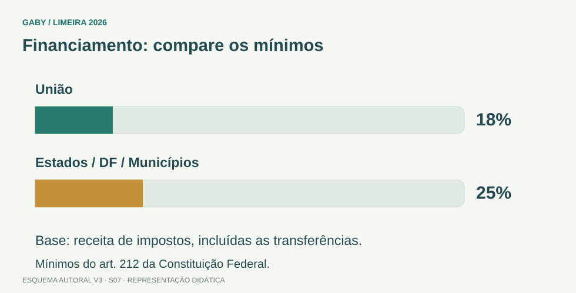

Objetivos do módulo
- Dominar os arts. 205 a 214 da Constituição Federal no texto vigente.
- Diferenciar direito à educação, princípios do ensino e deveres do Estado.
- Reconhecer prioridades dos entes federativos e percentuais mínimos de aplicação em educação.
- Compreender a finalidade constitucional do Plano Nacional de Educação.
- Identificar o que determina cada inciso e parágrafo dos arts. 206 a 214, com as emendas que os alteraram.
- Calcular os mínimos do art. 212 e as parcelas da complementação da União ao Fundeb (art. 212-A e ADCT, art. 60).
- Aplicar as regras de uso do Fundeb: 70% para profissionais, 15% para despesas de capital, 50% para educação infantil, 4% para tempo integral e o teto de 30%.
Financiamento: compare os mínimos

Descrição em texto do esquema
- União: 18% da base constitucional.
- Estados, DF e Municípios: 25% da base constitucional.
- Base: Receita de impostos, incluídas transferências.
Oficina visual · aplique o esquema
Em um exemplo didático, a base constitucional de um Município é R$ 8 milhões. Qual o mínimo de 25%?
Atividade autoral complementar da V3. Registre sua resposta; a resolução está no arquivo de gabarito e revisão.
Mapa do conteúdo
1. Art. 205 - direito, dever e finalidade da educação
A Constituição abre a seção da educação estabelecendo três ideias fundamentais: a educação é direito de todos, é dever do Estado e da família e deve ser promovida e incentivada com a colaboração da sociedade.
A finalidade constitucional é o pleno desenvolvimento da pessoa, seu preparo para o exercício da cidadania e sua qualificação para o trabalho. A banca costuma criar alternativas erradas usando palavras como “exclusivamente”, “somente” ou retirando um dos sujeitos responsáveis.
A Constituição Federal é norma nacional: os arts. 205 a 214 obrigam a União, os Estados, o Distrito Federal e os Municípios. Valem, portanto, para a rede municipal de Limeira e para a rotina da secretaria de qualquer escola pública.
| Dispositivo | O que determina | Como cai |
|---|---|---|
| Art. 205 (titular do direito) | A educação é direito de todos. | Alternativa que restringe o direito a crianças, a estudantes já matriculados ou a brasileiros. |
| Art. 205 (quem tem o dever) | O dever é do Estado e da família. A educação é promovida e incentivada com a colaboração da sociedade. | “Dever exclusivo do Estado”, família com participação facultativa ou sociedade impedida de colaborar. |
| Art. 205 (finalidades) | Pleno desenvolvimento da pessoa, preparo para o exercício da cidadania e qualificação para o trabalho. | Alternativa que reduz a educação à formação técnica ou ao mercado de trabalho, ou que omite a cidadania. |
2. Art. 206 - princípios do ensino
Entre os princípios estão igualdade de condições para acesso e permanência, liberdade de aprender e ensinar, pluralismo de ideias e concepções pedagógicas, coexistência de instituições públicas e privadas, gratuidade do ensino público em estabelecimentos oficiais, valorização dos profissionais da educação, gestão democrática do ensino público, garantia de padrão de qualidade, piso salarial profissional nacional e direito à educação e à aprendizagem ao longo da vida.
| Princípio | Pegadinha comum |
|---|---|
| Igualdade | A Constituição fala em acesso e permanência. |
| Gratuidade | Refere-se ao ensino público em estabelecimentos oficiais. |
| Gestão democrática | Aplica-se ao ensino público, na forma da lei. |
| Aprendizagem ao longo da vida | É princípio constitucional expresso. |
Os incisos do art. 206, um a um
| Dispositivo | O que determina | Como cai |
|---|---|---|
| Art. 206, I | Igualdade de condições para o acesso e permanência na escola. | Alternativa que fala só em acesso, ou troca permanência por aprovação. |
| Art. 206, II | Liberdade de aprender, ensinar, pesquisar e divulgar o pensamento, a arte e o saber. | Caso de escola que barra, sem base legal, a divulgação de um trabalho de pesquisa. Liberdade não significa ausência de regras de convivência. |
| Art. 206, III | Pluralismo de ideias e de concepções pedagógicas e coexistência de instituições públicas e privadas de ensino. | Afirmar que a Constituição proíbe escolas privadas ou impõe uma única linha pedagógica. |
| Art. 206, IV | Gratuidade do ensino público em estabelecimentos oficiais. | Cobrança de taxa em escola pública; ou dizer que a gratuidade alcança a escola particular. |
| Art. 206, V (EC 53/2006) | Valorização dos profissionais da educação escolar, com planos de carreira na forma da lei e ingresso exclusivamente por concurso público de provas e títulos, para os das redes públicas. | Admitir indicação política ou concurso só de provas; procurar o piso salarial neste inciso. |
| Art. 206, VI | Gestão democrática do ensino público, na forma da lei. | O texto fala em ensino público; a forma de gestão é definida em lei. |
| Art. 206, VII | Garantia de padrão de qualidade. | Afirmar que basta ofertar vagas, ou que qualidade não é princípio do ensino. |
| Art. 206, VIII (EC 53/2006) | Piso salarial profissional nacional para os profissionais da educação escolar pública, nos termos de lei federal. | A Constituição não fixa valor: remete à lei federal. Para o magistério público da educação básica, essa lei é a Lei nº 11.738/2008. |
| Art. 206, IX (EC 108/2020) | Garantia do direito à educação e à aprendizagem ao longo da vida. | Inciso mais recente; a banca afirma que ele não é princípio constitucional. |
| Art. 206, parágrafo único (EC 53/2006) | A lei disporá sobre as categorias de trabalhadores considerados profissionais da educação básica e sobre o prazo para elaborar ou adequar seus planos de carreira, em todos os entes. | Confundir com o inciso V: o parágrafo trata de quem é profissional da educação básica e do prazo dos planos. |
3. Arts. 207 a 211 - universidades, dever do Estado e organização federativa
O art. 208 assegura, entre outros pontos, educação básica obrigatória e gratuita dos 4 aos 17 anos, oferta gratuita também para quem não teve acesso na idade própria, atendimento educacional especializado preferencialmente na rede regular, educação infantil em creche e pré-escola até 5 anos, ensino noturno regular adequado e programas suplementares em todas as etapas da educação básica.
O acesso ao ensino obrigatório e gratuito é direito público subjetivo. O art. 211 estabelece regime de colaboração: Municípios atuam prioritariamente no ensino fundamental e na educação infantil; Estados e Distrito Federal, prioritariamente no ensino fundamental e médio.
Art. 207 - universidades (visão enxuta)
O art. 207 pouco aparece na rotina de uma escola municipal, mas é cobrado em prova. Basta guardar os quatro pontos abaixo.
| Dispositivo | O que determina | Como cai |
|---|---|---|
| Art. 207, caput | As universidades gozam de autonomia didático-científica, administrativa e de gestão financeira e patrimonial. | Autonomia não é soberania: não permite ignorar a lei nem criar tributos. |
| Art. 207, caput | As universidades obedecem ao princípio da indissociabilidade entre ensino, pesquisa e extensão. | Alternativa que fala em separação das três atividades ou em escolher só uma delas. |
| Art. 207, §1º (EC 11/1996) | É facultado às universidades admitir professores, técnicos e cientistas estrangeiros, na forma da lei. | Trocar “facultado” por “obrigatório” ou por “proibido”. |
| Art. 207, §2º (EC 11/1996) | O disposto no artigo aplica-se às instituições de pesquisa científica e tecnológica. | Estender a autonomia a qualquer escola ou empresa do ramo educacional. |
Art. 208 - como o Estado cumpre o dever de educar
| Dispositivo | O que determina | Como cai |
|---|---|---|
| Art. 208, I (EC 59/2009) | Educação básica obrigatória e gratuita dos 4 aos 17 anos de idade, assegurada a oferta gratuita para todos os que a ela não tiveram acesso na idade própria. | Faixas erradas (3 a 21, 6 a 14), “educação facultativa” ou dever limitado ao ensino fundamental. |
| Art. 208, II (EC 14/1996) | Progressiva universalização do ensino médio gratuito. | Pouco cobrado; lembre que a faixa obrigatória de 4 a 17 anos do inciso I já alcança a idade típica do ensino médio. |
| Art. 208, III | Atendimento educacional especializado às pessoas com deficiência, preferencialmente na rede regular de ensino. O texto constitucional ainda usa a expressão antiga “portadores de deficiência”. | Trocar “preferencialmente na rede regular” por “exclusivamente em escola especial”. |
| Art. 208, IV (EC 53/2006) | Educação infantil, em creche e pré-escola, às crianças até 5 anos de idade. | Redação antiga falava em zero a seis anos. |
| Art. 208, V | Acesso aos níveis mais elevados do ensino, da pesquisa e da criação artística, segundo a capacidade de cada um. | Trocar o critério da capacidade por renda ou por sorteio. |
| Art. 208, VI | Oferta de ensino noturno regular, adequado às condições do educando. | Dizer que o ensino noturno é opcional para o poder público. |
| Art. 208, VII (EC 59/2009) | Atendimento ao educando, em todas as etapas da educação básica, por programas suplementares de material didático-escolar, transporte, alimentação e assistência à saúde. | Redação antiga restringia os programas ao ensino fundamental. |
| Art. 208, §1º | O acesso ao ensino obrigatório e gratuito é direito público subjetivo. | Lacuna “direito público ___”: a palavra é subjetivo. |
| Art. 208, §2º | O não oferecimento do ensino obrigatório pelo Poder Público, ou sua oferta irregular, importa responsabilidade da autoridade competente. | Afirmar que a falta de vaga não gera responsabilidade de ninguém. |
| Art. 208, §3º | Compete ao Poder Público recensear os educandos no ensino fundamental, fazer-lhes a chamada e zelar, junto aos pais ou responsáveis, pela frequência à escola. | Questão de rotina escolar: o controle de frequência tem base constitucional e envolve a família. |
Direito público subjetivo é o direito que a pessoa pode exigir individualmente do Estado, inclusive na Justiça. Exemplo: se uma criança de 4 anos não consegue vaga na pré-escola pública, a família pode exigir a vaga do Município, porque a pré-escola está dentro da faixa obrigatória.
Arts. 209 e 210 - ensino privado, conteúdos mínimos e ensino religioso
| Dispositivo | O que determina | Como cai |
|---|---|---|
| Art. 209, caput e I | O ensino é livre à iniciativa privada, desde que cumpra as normas gerais da educação nacional. | Dizer que a escola particular não segue norma pública por ser atividade privada. |
| Art. 209, II | A escola privada depende de autorização e avaliação de qualidade pelo Poder Público. | Excluir a avaliação de qualidade ou a autorização para escolas privadas. |
| Art. 210, caput | Serão fixados conteúdos mínimos para o ensino fundamental, de maneira a assegurar formação básica comum e respeito aos valores culturais e artísticos, nacionais e regionais. | Dispensar os conteúdos mínimos, desprezar os valores regionais ou atribuir a definição apenas ao Município. |
| Art. 210, §1º | O ensino religioso tem matrícula facultativa e constitui disciplina dos horários normais das escolas públicas de ensino fundamental. | Dizer que é obrigatório, que fica fora do horário regular ou que o dispositivo trata do ensino médio. |
| Art. 210, §2º | O ensino fundamental regular é ministrado em língua portuguesa; às comunidades indígenas também se assegura o uso de suas línguas maternas e de processos próprios de aprendizagem. | Afirmar que a escola indígena só pode usar a língua portuguesa. |
Na prática da secretaria: a escola pública de ensino fundamental oferece a disciplina dentro do horário normal, mas a matrícula do aluno nela não pode ser imposta.
Art. 211 - regime de colaboração e prioridades de cada ente
| Dispositivo | O que determina | Como cai |
|---|---|---|
| Art. 211, caput | União, Estados, Distrito Federal e Municípios organizam seus sistemas de ensino em regime de colaboração. | Afirmar que há hierarquia: um ente “manda” no sistema do outro. |
| Art. 211, §1º (EC 14/1996) | A União organiza o sistema federal de ensino e o dos Territórios, financia as instituições públicas federais e exerce função redistributiva e supletiva, com assistência técnica e financeira aos demais entes, para garantir equalização de oportunidades e padrão mínimo de qualidade. | Dizer que a União não tem papel financeiro na educação básica dos demais entes. |
| Art. 211, §2º (EC 14/1996) | Os Municípios atuam prioritariamente no ensino fundamental e na educação infantil. | Trocar a prioridade municipal pela estadual (ensino médio). |
| Art. 211, §3º (EC 14/1996) | Os Estados e o Distrito Federal atuam prioritariamente no ensino fundamental e médio. | “Prioritariamente” não significa “exclusivamente”. |
| Art. 211, §4º (EC 108/2020) | Os quatro entes definem formas de colaboração para assegurar a universalização, a qualidade e a equidade do ensino obrigatório. | Omitir a qualidade e a equidade, incluídas em 2020, ou reduzir o objetivo à diminuição de matrículas. |
| Art. 211, §5º (EC 53/2006) | A educação básica pública atende prioritariamente ao ensino regular. | O parágrafo define prioridade; não extingue modalidades como a educação de jovens e adultos. |
| Art. 211, §6º (EC 108/2020) | União, Estados, Distrito Federal e Municípios exercem ação redistributiva em relação a suas escolas. | Afirmar que só a União redistribui recursos. |
| Art. 211, §7º (EC 108/2020) | O padrão mínimo de qualidade do §1º considera as condições adequadas de oferta e tem como referência o Custo Aluno Qualidade (CAQ), pactuado em regime de colaboração na forma de lei complementar (art. 23, parágrafo único). | Medir qualidade pelo menor preço ou trocar lei complementar por decreto. |
Exemplo de ação redistributiva (§6º): uma rede municipal pode destinar mais apoio às escolas com maior número de alunos em situação de vulnerabilidade, em vez de dividir tudo igualmente, desde que siga critérios públicos.
4. Arts. 212 e 213 - financiamento
O art. 212 fixa percentuais mínimos de aplicação da receita resultante de impostos, compreendida a proveniente de transferências, na manutenção e desenvolvimento do ensino: a União aplica nunca menos de 18%; Estados, Distrito Federal e Municípios, no mínimo 25%.
O art. 213 estabelece que os recursos públicos são destinados às escolas públicas, admitindo destinação, nas condições constitucionais, a escolas comunitárias, confessionais ou filantrópicas definidas em lei e que cumpram requisitos.
| Ente | Mínimo constitucional |
|---|---|
| União | 18% |
| Estados | 25% |
| Distrito Federal | 25% |
| Municípios | 25% |
Art. 212 - aplicação mínima em manutenção e desenvolvimento do ensino
A base do cálculo é a receita resultante de impostos, incluída a que vem de transferências. Taxas e contribuições não entram nessa base. O mínimo é anual e se aplica na manutenção e desenvolvimento do ensino (MDE).
| Dispositivo | O que determina | Como cai |
|---|---|---|
| Art. 212, caput | A União aplica, anualmente, nunca menos de 18%; Estados, Distrito Federal e Municípios, no mínimo 25% da receita resultante de impostos, compreendida a proveniente de transferências, na manutenção e desenvolvimento do ensino. | Inverter os percentuais (União 25%) ou aplicá-los sobre toda a receita do ente. |
| Art. 212, §1º | A parcela da arrecadação de impostos transferida pela União aos Estados, ao DF e aos Municípios, ou pelos Estados aos seus Municípios, não é considerada receita do governo que a transferir, para o cálculo do mínimo. | Contar a mesma receita duas vezes: no ente que transfere e no que recebe. |
| Art. 212, §2º | Para cumprir o caput, consideram-se os sistemas de ensino federal, estadual e municipal e os recursos aplicados na forma do art. 213. | Pouco cobrado; lembre que recurso aplicado conforme o art. 213 também conta. |
| Art. 212, §3º (EC 59/2009) | A distribuição dos recursos públicos prioriza o ensino obrigatório, quanto à universalização, ao padrão de qualidade e à equidade, nos termos do plano nacional de educação. | Dizer que a prioridade é o ensino superior. |
| Art. 212, §4º | Os programas suplementares de alimentação e assistência à saúde (art. 208, VII) são financiados com contribuições sociais e outros recursos orçamentários. | Indicar mensalidade, doação de professores ou taxa cobrada dos pais como fonte. |
| Art. 212, §5º (EC 53/2006) | A educação básica pública tem como fonte adicional de financiamento a contribuição social do salário-educação, recolhida pelas empresas na forma da lei. | Confundir com cobrança feita às famílias; a redação antiga falava só em ensino fundamental. |
| Art. 212, §6º (EC 53/2006) | As cotas estaduais e municipais do salário-educação são distribuídas proporcionalmente ao número de alunos matriculados na educação básica nas respectivas redes públicas. | Trocar o critério das matrículas por população, área ou escolha política. |
| Art. 212, §7º (EC 108/2020) | É vedado usar os recursos do caput e dos §§5º e 6º para pagamento de aposentadorias e de pensões. | Renomear a despesa previdenciária no relatório não muda sua natureza. |
| Art. 212, §8º (EC 108/2020) | Na hipótese de extinção ou de substituição de impostos, serão redefinidos os percentuais do caput e do art. 212-A, II, para que as aplicações em educação sejam equivalentes às anteriores. | Afirmar que a reforma de um imposto elimina automaticamente a vinculação. |
| Art. 212, §9º (EC 108/2020) | A lei disporá sobre normas de fiscalização, de avaliação e de controle das despesas com educação nas esferas estadual, distrital e municipal. | Dizer que o gasto educacional do Município é imune a controle. |
Como fazer a conta do mínimo:
- Some os impostos arrecadados pelo próprio ente.
- Some as transferências de impostos que ele recebeu de outros entes.
- Subtraia a parcela de impostos que ele transferiu a outros entes (§1º).
- Aplique 18% (União) ou 25% (Estados, DF e Municípios) sobre o resultado.
Art. 213 - recursos públicos para escolas não estatais
| Dispositivo | O que determina | Como cai |
|---|---|---|
| Art. 213, caput | Os recursos públicos são destinados às escolas públicas, podendo ser dirigidos a escolas comunitárias, confessionais ou filantrópicas, definidas em lei, que cumpram os incisos I e II. | Dizer que qualquer escola particular, com fins lucrativos, pode receber. |
| Art. 213, I | A escola deve comprovar finalidade não lucrativa e aplicar seus excedentes financeiros em educação. | Trocar por “comprovar gratuidade” ou admitir distribuição de lucro. |
| Art. 213, II | A escola deve assegurar a destinação de seu patrimônio a outra escola comunitária, filantrópica ou confessional, ou ao Poder Público, no caso de encerramento de suas atividades. | Trocar o destinatário por outro órgão ou admitir a divisão do patrimônio entre os dirigentes. |
| Art. 213, §1º | Os recursos podem custear bolsas de estudo no ensino fundamental e médio, na forma da lei, para quem demonstrar insuficiência de recursos, quando faltarem vagas e cursos regulares da rede pública na localidade de residência do educando. O Poder Público fica obrigado a investir prioritariamente na expansão de sua rede na localidade. | Tratar a bolsa como solução definitiva que dispensa a expansão da rede pública. |
| Art. 213, §2º (EC 85/2015) | Atividades de pesquisa, de extensão e de estímulo e fomento à inovação de universidades e/ou instituições de educação profissional e tecnológica podem receber apoio financeiro do Poder Público. | Pouco cobrado; não confundir com o art. 207. |
5. Art. 214 - Plano Nacional de Educação
O Plano Nacional de Educação tem duração decenal e busca articular o sistema nacional de educação em regime de colaboração, definindo diretrizes, objetivos, metas e estratégias.
A Constituição enumera finalidades como erradicação do analfabetismo, universalização do atendimento escolar, melhoria da qualidade, formação para o trabalho, promoção humanística, científica e tecnológica e meta de aplicação de recursos públicos em educação como proporção do PIB.
| Dispositivo | O que determina | Como cai |
|---|---|---|
| Art. 214, caput (EC 59/2009) | A lei estabelece o plano nacional de educação, de duração decenal, para articular o sistema nacional de educação em regime de colaboração e definir diretrizes, objetivos, metas e estratégias de implementação, por meio de ações integradas dos poderes públicos. | Plano “anual” ou “plurianual”: a redação original falava em plano plurianual; a vigente diz decenal (dez anos). |
| Art. 214, I a V | O plano conduz à erradicação do analfabetismo, à universalização do atendimento escolar, à melhoria da qualidade do ensino, à formação para o trabalho e à promoção humanística, científica e tecnológica do País. | Incluir finalidade estranha à lista ou trocar “erradicação” por “redução” do analfabetismo. |
| Art. 214, VI (EC 59/2009) | Estabelecimento de meta de aplicação de recursos públicos em educação como proporção do produto interno bruto (PIB). | A Constituição não fixa o percentual do PIB: ela manda que o plano estabeleça a meta. |
6. Art. 212-A e ADCT, art. 60 - Fundeb
O Fundeb (Fundo de Manutenção e Desenvolvimento da Educação Básica e de Valorização dos Profissionais da Educação) passou a ser permanente com a EC 108/2020, que incluiu o art. 212-A na Constituição. Ele é regulamentado pela Lei nº 14.113/2020.
Pelo caput do art. 212-A, Estados, Distrito Federal e Municípios destinam parte dos recursos do art. 212 (os 25%) à manutenção e desenvolvimento do ensino na educação básica e à remuneração condigna de seus profissionais. Há um fundo em cada Estado: Limeira participa do Fundeb do Estado de São Paulo, contribuindo com parte de suas receitas e recebendo recursos do fundo conforme suas matrículas.
Formação e distribuição do fundo (incisos I a IV)
| Dispositivo | O que determina | Como cai |
|---|---|---|
| Art. 212-A, I | Em cada Estado e no Distrito Federal há um Fundeb, de natureza contábil, que distribui recursos e responsabilidades entre o Estado e seus Municípios. | O fundo não é órgão, empresa nem conta pessoal de gestor. |
| Art. 212-A, II (redação da EC 132/2023) | Os fundos são formados por 20% de uma cesta definida: parcelas dos Estados e do DF no imposto sobre bens e serviços do art. 156-A; impostos estaduais (ITCMD, ICMS e IPVA); e transferências listadas, como as cotas municipais do ITR, do IPVA e do ICMS e os fundos de participação dos Estados (FPE) e dos Municípios (FPM). | Aplicar os 20% a qualquer receita. Os impostos próprios dos Municípios (IPTU, ISS e ITBI) não entram nessa cesta, embora entrem nos 25% do art. 212. |
| Art. 212-A, III | Os recursos são distribuídos entre o Estado e seus Municípios proporcionalmente às matrículas da educação básica presencial nas respectivas redes, nos âmbitos de atuação prioritária (art. 211, §§2º e 3º), com ponderações. | Distribuir pela população ou em partes iguais. |
| Art. 212-A, IV | A União complementa os recursos dos fundos. | Dizer que a União não participa do Fundeb. |
Complementação da União (incisos V e VI)
Pelo inciso V, a complementação da União equivale a, no mínimo, 23% do total de recursos do inciso II (a soma de todos os fundos), dividida em três modalidades:
| Dispositivo | O que determina | Como cai |
|---|---|---|
| Art. 212-A, V, a (VAAF) | 10 pontos percentuais no âmbito de cada Estado e do DF, sempre que o valor anual por aluno (VAAF) do fundo não alcançar o mínimo definido nacionalmente. | O VAAF olha o fundo do Estado como um todo. |
| Art. 212-A, V, b (VAAT) | No mínimo 10,5 pontos percentuais em cada rede pública de ensino municipal, estadual ou distrital, sempre que o valor anual total por aluno (VAAT) não alcançar o mínimo definido nacionalmente. | O VAAT olha cada rede, somando ao Fundeb outras receitas da educação (inciso VI e §1º). |
| Art. 212-A, V, c | 2,5 pontos percentuais nas redes públicas que, cumpridas condicionalidades de melhoria de gestão previstas em lei, alcançarem evolução de indicadores de atendimento e melhoria da aprendizagem com redução das desigualdades, nos termos do sistema nacional de avaliação da educação básica. | A Lei nº 14.113/2020 chama essa parcela de complementação-VAAR. Ela premia resultado com redução de desigualdades. |
| Art. 212-A, VI | O VAAT é calculado com os recursos do inciso II, acrescidos de outras receitas e transferências vinculadas à educação, conforme o §1º e as matrículas do inciso III. | Confundir a base do VAAT com a do VAAF. |
Regras de aplicação (incisos VII a XV)
| Dispositivo | O que determina | Como cai |
|---|---|---|
| Art. 212-A, VII | Os recursos do fundo e da complementação são aplicados pelos Estados e Municípios exclusivamente nos respectivos âmbitos de atuação prioritária (art. 211, §§2º e 3º). | Município usar o Fundeb em ensino superior ou em atividade sem vínculo educacional. |
| Art. 212-A, VIII | A vinculação do art. 212 (os 18% da União) suporta, no máximo, 30% da complementação da União. | Confundir esse teto de 30% com o total da complementação (23%). |
| Art. 212-A, IX | Aplica-se aos recursos do fundo e da complementação o art. 160 (proibição de reter ou restringir a entrega dos recursos); o descumprimento pela autoridade competente é crime de responsabilidade. | Dizer que a retenção é mera irregularidade administrativa. |
| Art. 212-A, X | A lei disporá sobre a organização dos fundos, as ponderações, o cálculo do VAAF e do VAAT, a distribuição da alínea c, a transparência e o controle social (conselhos de acompanhamento) e a avaliação dos efeitos. | Essa lei é a Lei nº 14.113/2020. |
| Art. 212-A, XI | No mínimo 70% de cada fundo, excluídos os recursos da alínea c do inciso V, vão para o pagamento dos profissionais da educação básica em efetivo exercício. Dos recursos da alínea b (VAAT), no mínimo 15% vão para despesas de capital. | Usar os 60% do Fundeb antigo (EC 53/2006, só magistério) ou aplicar os 15% a toda a receita educacional. |
| Art. 212-A, XII | Lei específica disporá sobre o piso salarial profissional nacional dos profissionais do magistério da educação básica pública. | É a Lei nº 11.738/2008. |
| Art. 212-A, XIII | É vedado usar os recursos do salário-educação (art. 212, §5º) na complementação da União ao Fundeb. | Não confundir: as cotas estaduais e municipais do salário-educação entram no cálculo do VAAT (§1º, II), mas não podem pagar a complementação da União. |
| Art. 212-A, XIV (EC 135/2024) | Só no exercício de 2025, até 10% de cada modalidade da complementação podiam ser repassados pela União para fomentar matrículas em tempo integral. | Regra transitória de 2025; não confundir com o inciso XV. |
| Art. 212-A, XV (EC 135/2024) | A partir do exercício de 2026, no mínimo 4% dos recursos dos fundos são destinados pelos Estados, DF e Municípios à criação de matrículas em tempo integral na educação básica, conforme diretrizes pactuadas entre a União e os demais entes, até atingir as metas de tempo integral do Plano Nacional de Educação. | Trocar 4% por 10% (regra de 2025) ou dizer que a regra não está na Constituição. |
Parágrafos do art. 212-A
| Dispositivo | O que determina | Como cai |
|---|---|---|
| Art. 212-A, §1º | O cálculo do VAAT considera, além dos recursos do inciso II, pelo menos: receitas vinculadas à manutenção e desenvolvimento do ensino que não integram o fundo; cotas estaduais e municipais do salário-educação; e a complementação VAAF recebida. | Dizer que o VAAT considera só o dinheiro do fundo. |
| Art. 212-A, §2º | A lei define ponderações ligadas ao nível socioeconômico dos educandos e a indicadores de disponibilidade de recursos e de potencial de arrecadação de cada ente. | Pouco cobrado. |
| Art. 212-A, §3º | Será destinada à educação infantil a proporção de 50% dos recursos globais da complementação VAAT (inciso V, b), nos termos da lei. | Aplicar os 50% a toda a receita do Município ou à complementação VAAF. |
ADCT, art. 60: a escada da complementação até 2026
O art. 60 do Ato das Disposições Constitucionais Transitórias (redação da EC 108/2020) implantou a complementação aos poucos, a partir de 1º de janeiro de 2021. O sexto ano é 2026: a partir dele vale o percentual pleno do art. 212-A, V.
| Ano | Complementação mínima total | Parcela VAAT (pontos) | Parcela da alínea c (pontos) |
|---|---|---|---|
| 2021 (1º ano) | 12% | 2 | — |
| 2022 (2º ano) | 15% | 5 | — |
| 2023 (3º ano) | 17% | 6,25 | 0,75 |
| 2024 (4º ano) | 19% | 7,5 | 1,5 |
| 2025 (5º ano) | 21% | 9 | 2 |
| 2026 (6º ano) | 23% | 10,5 | 2,5 |
O ADCT fixa o total e as parcelas VAAT e da alínea c. A parcela VAAF é a do art. 212-A, V, a (10 pontos), e a soma fecha o total de cada ano. Exemplo: em 2024, 10 + 7,5 + 1,5 = 19%.
O art. 60-A do ADCT manda rever os critérios de distribuição da complementação e dos fundos no sexto ano de vigência e, depois, a cada 10 anos.
Exemplos resolvidos passo a passo
Exemplo 1
Situação: Questão diz: “A educação é dever exclusivo do Estado.”
Exemplo 2
Situação: Alternativa afirma que Município atua prioritariamente no ensino médio.
Exemplo 3
Situação: Pergunta o mínimo constitucional para Município aplicar em manutenção e desenvolvimento do ensino.
Exemplo 4
Situação: Um Município hipotético arrecadou no ano R$ 12 milhões em impostos próprios (IPTU, ISS e ITBI) e recebeu R$ 28 milhões em transferências de impostos (cotas de ICMS e IPVA, FPM e outras). Qual é o mínimo a aplicar em manutenção e desenvolvimento do ensino?
Exemplo 5
Situação: Em valores hipotéticos, a União arrecadou R$ 50 bilhões em impostos e transferiu R$ 20 bilhões desses impostos a Estados, DF e Municípios. Qual é o mínimo federal em manutenção e desenvolvimento do ensino?
Exemplo 6
Situação: Suponha que, em 2026, a soma de todos os fundos do Fundeb (inciso II do art. 212-A) seja de R$ 400 bilhões. Qual é a complementação mínima da União e como ela se divide?
Exemplo 7
Situação: Uma rede municipal hipotética recebeu em 2026 R$ 50 milhões do fundo do seu Estado, sem complementação da União. Quanto deve ir, no mínimo, para os profissionais da educação básica e para a criação de matrículas em tempo integral?
Pegadinhas e erros frequentes
- Trocar 18% da União por 25%.
- Dizer que educação é dever exclusivo do Estado.
- Trocar prioridades de Municípios e Estados.
- Confundir Plano Nacional de Educação com plano anual.
- Ignorar que o texto constitucional vigente já foi alterado por emendas.
- Misturar os arts. 205 e 227: no art. 205, o dever de educação é do Estado e da família, com a colaboração da sociedade; no art. 227, é dever da família, da sociedade e do Estado assegurar à criança, ao adolescente e ao jovem, com absoluta prioridade, direitos como a educação.
- Procurar o piso salarial no inciso V do art. 206: desde a EC 53/2006 ele está no inciso VIII.
- Dar ao ensino religioso matrícula obrigatória, horário fora das aulas ou previsão no ensino médio (art. 210, §1º).
- Tratar o acesso ao ensino obrigatório como promessa: é direito público subjetivo, exigível (art. 208, §1º).
- Contar duas vezes a receita transferida: ela não é receita de quem transfere (art. 212, §1º).
- Pagar aposentadorias e pensões com os recursos vinculados do art. 212 (vedado pelo §7º).
- Incluir IPTU, ISS e ITBI na cesta de 20% do Fundeb: eles entram nos 25% do art. 212, não no art. 212-A, II.
- Confundir VAAF (fundo de cada Estado) com VAAT (cada rede, com outras receitas da educação).
- Confundir os 70% do Fundeb atual (profissionais da educação básica) com os 60% do Fundeb antigo (magistério).
- Tomar o teto de 30% do inciso VIII como o total da complementação da União (23%).
- Trocar o inciso XIV (2025, até 10%, repasse da União) pelo XV (a partir de 2026, mínimo de 4%, aplicado pelos entes).
- Dizer que a Constituição fixa o percentual do PIB do PNE: ela só exige que o plano estabeleça a meta (art. 214, VI).
- Achar que a autonomia universitária do art. 207 permite ignorar a lei.
Resumo de prova
- Art. 205: direito de todos; dever do Estado e família; colaboração da sociedade.
- Art. 206: princípios do ensino.
- Art. 208: educação básica obrigatória e gratuita dos 4 aos 17 anos.
- Direito ao ensino obrigatório e gratuito é direito público subjetivo.
- Municípios: infantil + fundamental.
- Estados/DF: fundamental + médio.
- Art. 212: União 18%; Estados/DF/Municípios 25%.
- Art. 214: PNE decenal.
- Art. 206, V: ingresso nas redes públicas exclusivamente por concurso público de provas e títulos; VIII: piso nacional por lei federal; IX: aprendizagem ao longo da vida.
- Art. 207: autonomia didático-científica, administrativa e de gestão financeira e patrimonial; indissociabilidade entre ensino, pesquisa e extensão.
- Art. 208, §§2º e 3º: oferta irregular gera responsabilidade; recenseamento, chamada e zelo pela frequência.
- Art. 209: ensino privado livre, com normas gerais, autorização e avaliação de qualidade.
- Art. 210: conteúdos mínimos e formação básica comum; ensino religioso facultativo no fundamental público; língua portuguesa e línguas indígenas.
- Art. 211, §§4º a 7º: universalização, qualidade e equidade; prioridade ao ensino regular; ação redistributiva de todos os entes; CAQ por lei complementar.
- Art. 212, §§: receita transferida não conta para quem transfere; salário-educação pago pelas empresas, com cotas por matrícula; vedadas aposentadorias e pensões.
- Art. 212-A: fundo contábil em cada Estado; 20% da cesta do inciso II; União com no mínimo 23% (10 + 10,5 + 2,5); 70% para profissionais; 15% de capital e 50% para educação infantil na parcela VAAT; 4% para tempo integral desde 2026; teto de 30%.
- ADCT, art. 60: complementação de 12% (2021) a 23% (2026).
- Art. 213: finalidade não lucrativa, destino do patrimônio e bolsas com obrigação de expandir a rede.
- Art. 214, VI: meta de recursos públicos em educação como proporção do PIB.
Exercícios do módulo
Resolva sem consultar o arquivo de gabarito. As questões são autorais e construídas para treinar os conceitos do edital.
- dever exclusivo da União
- direito apenas de menores de idade
- responsabilidade somente das escolas
- direito de todos e dever do Estado e da família
- proibição de instituições privadas
- gratuidade obrigatória de toda instituição privada
- igualdade de condições para acesso e permanência na escola
- seleção por renda como regra
- 7 aos 21 anos
- 4 aos 17 anos
- 6 aos 14 anos
- 0 aos 18 anos
- na educação infantil e no ensino fundamental
- no ensino superior e pós-graduação
- apenas no ensino médio
- somente em creches privadas
- apenas na educação infantil
- somente no ensino superior
- exclusivamente em creches
- no ensino fundamental e médio
- 10%
- 30%
- 18%
- 25%
- 50%
- 25%
- 18%
- 15%
- decenal
- anual
- bienal
- indeterminada
- mera recomendação
- benefício tributário
- direito condicionado à autorização judicial
- direito público subjetivo
- somente para ensino superior
- apenas em instituições privadas
- preferencialmente na rede regular de ensino
- exclusivamente fora da rede regular
Quando terminar, abra Secretário de Escola 07 - Constituição Federal - Educação - arts. 205 a 214 - Gabarito e Revisão.
Checklist de domínio
- ☐ Dominar os arts. 205 a 214 da Constituição Federal no texto vigente.
- ☐ Diferenciar direito à educação, princípios do ensino e deveres do Estado.
- ☐ Reconhecer prioridades dos entes federativos e percentuais mínimos de aplicação em educação.
- ☐ Compreender a finalidade constitucional do Plano Nacional de Educação.
- ☐ Citar os nove incisos e o parágrafo único do art. 206.
- ☐ Explicar o que é direito público subjetivo e os deveres dos §§2º e 3º do art. 208.
- ☐ Diferenciar as prioridades e os deveres de colaboração dos §§1º a 7º do art. 211.
- ☐ Calcular o mínimo do art. 212 aplicando a regra do §1º.
- ☐ Dividir a complementação da União ao Fundeb em VAAF, VAAT e alínea c, e aplicar 70%, 15%, 50%, 4% e 30%.
- ☐ Listar os requisitos do art. 213 para escolas comunitárias, confessionais e filantrópicas.
Meta do módulo: 80% ou mais nas questões, sem depender de consulta.
Referências e conteúdos auxiliares
- Brasil — Constituição Federal, texto compiladoLeia os dispositivos indicados no módulo e suas remissões no texto oficial.
- Constituição Federal e ADCT, texto compilado (Planalto)Conferidos os arts. 205 a 214, inclusive o art. 212-A nas redações das EC 108/2020, 132/2023 e 135/2024; os arts. 155, 157, 158, 159 e 160, citados pelo art. 212-A; e os arts. 60 e 60-A do ADCT. Conferido em 18/11/2026.
- Lei nº 14.113/2020 - Fundeb (Planalto)Conferidos a ementa (regulamenta o Fundeb do art. 212-A) e o nome das modalidades complementação-VAAF, VAAT e VAAR (art. 5º). Conferido em 18/11/2026.
- Lei nº 11.738/2008 - piso do magistério (Planalto)Conferida a ementa: piso salarial profissional nacional dos profissionais do magistério público da educação básica, regulamentando o art. 212-A, XII. Conferido em 18/11/2026.
Referências externas de apoio consultadas para a V3 em 27/09/2026. A origem das questões é o material autoral do projeto; estes links não indicam que uma instituição publicou ou validou os exercícios. As páginas externas precisam de internet. Em informática, confira a versão do programa; em legislação, observe o recorte e as regras de atualização do edital.